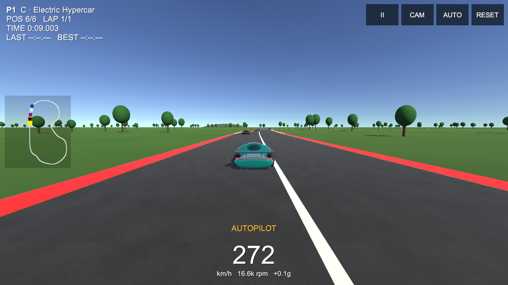

Race AI, go head-to-head in split-screen, beat your own ghost, launch down the quarter mile, or hand the wheel to autopilot. Every number in the physics comes from the HYPERCAR-X engineering model.
Pick one from the main menu. Laps, AI count and difficulty are in Settings.
Up to 5 AI racers in all five HYPERCAR-X variants. Positions, lap and race times, results screen.
Two players on one PC or phone, each with their own camera, HUD and touch controls, plus AI racers.
Your best lap is replayed as a see-through ghost. Beat it to set a new record and a new ghost.
Your two best saved laps race each other.
Start lights, false starts, ET, trap speed and 0-60, checked against the engineering model.
Watch the AI race. Switch cars and cinematic cameras.
Press P or AUTO to let the AI drive your car, and again to take it back.
Circuit, drag strip, skid pad, slalom and jump ramps, with a live 0-60 timer.
5 variants, swappable wheels, tyres, aero, motors, battery and brakes, each with pros and cons. 7 paints.
Click to enlarge.
Touch controls appear automatically on phones and tablets.
| Player 1 | Player 2 | Touch | |
|---|---|---|---|
| Throttle | W (↑ when solo) | ↑ | GAS |
| Brake / reverse | S (↓ when solo) | ↓ | BRAKE |
| Steer | A / D | ← / → | ◀ ▶ or tilt |
| Handbrake drift | Space | Right Shift | DRIFT |
| Camera | C | . | CAM |
| Autopilot | P | / | AUTO |
| Reset to track | R | , | RESET |
| Pause | Esc | II |
On Android, open the APK and allow "install unknown apps" when asked.
WebGL build. Works on desktop browsers; phones should use the APK.
Published on play.unity.com under jaineil32624_unity.
64-bit IL2CPP build with touch and tilt controls.
Unzip and run HypercarX-Drive.exe.
Open in Unity 6000.3 and use the HYPERCAR-X menu to build.
The parametric hypercar the game is built on.